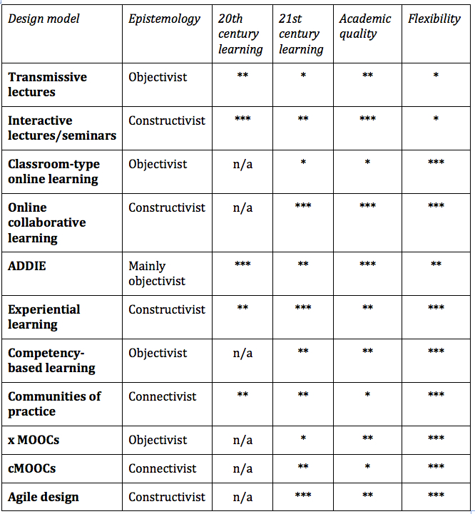

4.8 Tomando decisões sobre métodos de ensino

4.8.1 Escolhendo um método
Os capítulos 3 e 4 cobrem uma gama de diferentes métodos de ensino e modelos de design. Existem muitos outros que poderiam ter sido incluídos. Discutirei pedagogia aberta no Capítulo 11, Seção 4. Os MOOCs são também uma omissão notável. No entanto, os modelos de design por trás dos MOOCs requerem um capítulo completo próprio (Capítulo 5.)
A sua escolha do método de ensino e o design de ensino dentro desse método dependerão em grande parte do contexto em que você leciona. Contudo, um critério fundamental deve ser a adequação do método e/ou do modelo de design para o desenvolvimento dos conhecimentos e competências de que os aprendizes necessitarão na era digital. Outros fatores críticos serão as exigências da área de conhecimento, as características dos aprendizes a quem provavelmente ensinará, os recursos disponíveis, especialmente em termos de suporte aos estudantes e, provavelmente o mais importante de tudo, as suas próprias visões e crenças sobre o que constitui um “bom ensino”.
Além disso, os métodos de ensino abrangidos nos Capítulos 3 e 4, de modo geral, não se excluem mutuamente. Podem provavelmente ser misturados e combinados até certo ponto, mas existem limitações ao fazer isso. Ademais, uma abordagem consistente será menos confusa não só para os aprendizes, mas também para você como professor ou instrutor.
Então: como você escolheria um método de ensino adequado? Apresento a seguir, na Figura 4.8.2, uma forma de o fazer. Escolhi cinco critérios como cabeçalhos ao longo do topo da tabela:
4.8.1.1 Base epistemológica
Que epistemologia este método sugere? O método sugere uma visão do conhecimento como conteúdo que deve ser aprendido, sugerindo uma forma rígida (“correta”) de planejar a aprendizagem (objetivista)? Ou o método sugere que a aprendizagem é um processo dinâmico e que o conhecimento precisa de ser descoberto e está em constante mudança (construtivista)? O método sugere que o conhecimento reside nas conexões e interpretações de diferentes nós ou pessoas nas redes e que as conexões importam mais em termos de criação e comunicação de conhecimento do que os nós ou pessoas individuais na rede (conectivista)? Ou o método é epistemologicamente neutro, no sentido de que se poderia utilizar o mesmo método para ensinar a partir de diferentes posições epistemológicas?
4.8.1.2 Industrial (século XX) ou digital (século XXI)
Este método conduz ao tipo de aprendizagem que prepararia as pessoas para uma sociedade industrial, com resultados de aprendizagem padronizados, ajudando a identificar e selecionar uma elite relativamente pequena para o ensino superior ou para cargos de liderança na sociedade, permitindo que a aprendizagem seja facilmente organizada em grupos de estudantes com desempenho semelhante?
Alternativamente, o método incentiva o desenvolvimento de competências comportamentais e a gestão eficaz do conhecimento necessárias no mundo digital? O método permite e apoia a utilização educacional adequada das potencialidades das novas tecnologias? Fornece o tipo de suporte educacional de que os aprendizes necessitam para ter sucesso em um mundo volátil, incerto, complexo e ambíguo? Permite e incentiva os estudantes a tornarem-se cidadãos globais?
4.8.1.3 Qualidade acadêmica
O método conduz a uma compreensão profunda e à aprendizagem transformadora? Permite que os estudantes se tornem especialistas na área de estudo escolhida?
4.8.1.4 Flexibilidade
O método responde às necessidades da diversidade de estudantes atuais? Incentiva o acesso aberto e flexível à aprendizagem? Ajuda professores e instrutores a adaptarem o seu ensino a circunstâncias em constante mudança?
Estes são os meus critérios e você poderá querer utilizar critérios diferentes (o custo ou o seu tempo é outro fator importante), mas elaborei a tabela desta forma porque me ajudou a considerar melhor a minha posição relativamente aos diferentes métodos ou modelos de design. Onde considero que um método ou modelo de design é forte em um determinado critério, atribuí-lhe três estrelas, onde é fraco, uma estrela, e n/a para não aplicável. Novamente, você pode — e deve — classificar os modelos de forma diferente. (Viu? É por isso que sou construtivista — se fosse objetivista, diria quais critérios usar de forma categórica!)



Pode-se ver que o único método que se classifica bem em todos os três critérios de aprendizagem do século XXI, qualidade acadêmica e flexibilidade é a aprendizagem colaborativa on-line. A aprendizagem experiencial e o design ágil também obtêm classificações elevadas. As aulas expositivas transmissivas apresentam o pior desempenho. Esta é uma reflexão bastante fiel das minhas preferências. Contudo, se estiver ensinando engenharia civil do primeiro ano a mais de 500 estudantes, os seus critérios e classificações serão quase certamente diferentes dos meus. Por isso, considere a Figura 4.8.2 como um recurso heurístico e não como uma recomendação geral.
4.8.2 Modelos de design e a qualidade do ensino e da aprendizagem
Por fim, a revisão de diferentes métodos aponta para algumas das principais questões em torno da qualidade:
- primeiro, o que os estudantes aprendem tem maior probabilidade de ser influenciado pela escolha de um método de ensino adequado ao contexto em que se ensina do que pela concentração em uma tecnologia ou método de entrega específico (presencial ou on-line). A tecnologia e o método de entrega dizem mais respeito ao acesso e à flexibilidade e, consequentemente, às características do aprendiz, do que propriamente à aprendizagem. A aprendizagem é mais afetada pela pedagogia e pelo design da instrução;
- segundo, diferentes métodos de ensino tendem a levar a diferentes tipos de resultados de aprendizagem. É por isso que se dá tanta ênfase neste livro à clareza sobre quais conhecimentos e competências são necessários na era digital. Estes variam um pouco entre as diferentes áreas do conhecimento, mas apenas de forma limitada. A compreensão dos conteúdos será sempre importante, mas as capacidades de aprendizagem independente, o pensamento crítico, a inovação e a criatividade são ainda mais importantes. Qual o método de ensino com maior probabilidade de ajudar a desenvolver estas competências nos seus estudantes?
- terceiro, a qualidade depende não só da escolha de um método de ensino adequado, mas também da forma como essa abordagem ao ensino é implementada. A aprendizagem colaborativa on-line pode ser bem feita ou pode ser mal feita. O mesmo se aplica a outros métodos. Seguir princípios centrais de design é fundamental para a utilização bem-sucedida de qualquer método de ensino específico. Além disso, existe uma pesquisa considerável sobre quais são as condições de sucesso na utilização de alguns dos métodos ou modelos de design mais recentes. As conclusões dessas pesquisas devem ser aplicadas na implementação de um método específico (isto é discutido mais detalhadamente ao longo do livro, mas especificamente no Capítulo 12);
- por fim, os estudantes e os professores melhoram com a prática. Se você estiver mudando para um novo método de ensino ou modelo de design, dê a si mesmo (e aos seus estudantes) tempo para se familiarizarem com ele. Provavelmente serão necessários dois ou três cursos em que o novo método ou design seja aplicado antes de começar a sentir-se seguro de que está produzindo os resultados esperados. Contudo, é melhor cometer alguns erros ao longo do caminho do que continuar a ensinar de forma confortável, mas não formar os egressos de que se necessita no futuro.
Existem ainda dois métodos de ensino importantes a serem discutidos: Pedagogia Aberta no Capítulo 11, Seção 4, e MOOCs, que precisam do seu próprio capítulo (o próximo).

Um elemento de áudio foi excluído desta versão do texto. Você pode ouvi-lo on-line aqui: https://pressbooks.bccampus.ca/teachinginadigitalagev2/?p=143
Atividade 4.8 Fazendo escolhas
Descreva a sua principal área disciplinar e o seu nível. Depois tente responder a cada uma das seguintes perguntas:
1. Quais são os principais resultados de aprendizagem (em nível macro) que preciso alcançar neste curso ou programa, para que os estudantes fiquem devidamente preparados para o futuro?
2. Qual o método de ensino com maior probabilidade de me permitir ajudar os aprendizes a alcançar esses resultados?
3. O quanto teria de mudar o que estou fazendo agora, e como seria o curso ou programa no futuro? Poderia escrever um cenário para descrever como ensinaria no futuro? Ou como os estudantes aprenderiam no meu curso ou programa?
4. Que apoio é provável que receba da minha instituição, em termos de apoio às minhas ideias, apoio à mudança, fornecimento de recursos como treinamento em novos métodos ou ajuda profissional como a de designers instrucionais?
5. Como reagirão os meus estudantes às mudanças que estou considerando? Como poderia “vender-lhes” essa ideia?
Não é fornecido feedback sobre esta atividade; ela serve para a sua reflexão pessoal.
Pontos-chave (Capítulos 3 e 4)
1. O ensino tradicional em sala de aula, e especialmente as aulas expositivas transmissivas, foram planejados para outra época. Embora as aulas expositivas nos tenham servido bem, encontramo-nos hoje em uma era diferente, que exige métodos diferentes.
2. A principal mudança consiste em dar maior ênfase às competências, em particular à gestão do conhecimento, e menos à memorização de conteúdos. Necessitamos de métodos de ensino e de aprendizagem que conduzam ao desenvolvimento das competências exigidas na era digital.
3. Não existe um método de ensino único ou um modelo de design “ideal” para todas as circunstâncias. A escolha do método de ensino deve ter em conta o contexto em que será aplicado, mas, no entanto, alguns métodos são melhores do que outros para desenvolver os conhecimentos e as competências necessários na era digital. Para os contextos com os quais estou mais associado, a aprendizagem colaborativa on-line, a aprendizagem experiencial e o design ágil respondem melhor aos meus critérios.
4. Os métodos de ensino, em geral, não dependem de uma modalidade de entrega específica; podem funcionar, na maioria dos casos, tanto on-line como presencialmente.
5. Em um mundo cada vez mais volátil, incerto, complexo e ambíguo, necessitamos de métodos de ensino que sejam leves e ágeis.